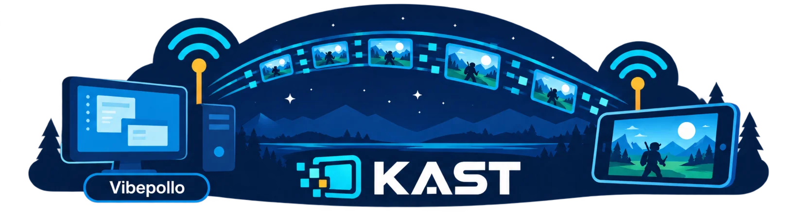
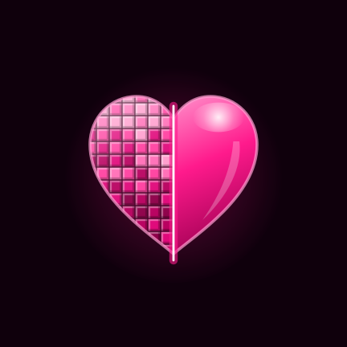

KAST — KRINIK Artemis Streaming Tool
Английский раздел
Русский раздел
Макет для решения. Кнопки сделаны по образцу кнопки DOWNLOAD APK из KARTUN: тот же размер, та же розовая пилюля, тот же шрифт.
Слева алмаз Obtainium, перекрашенный в розовую гамму Криника на белом круге. В README кнопки стоят высотой 72 px внутри <p align="center">.
Для каждого приложения показаны тёмная и светлая тема GitHub, ряд и столбец, английский и русский разделы.
Только кнопка Obtainium: своего APK-файла в README нет.
Кнопка «Download APK» осталась как есть (бейдж shields.io), Obtainium встаёт рядом. Бейдж высотой 28 px, он заметно меньше розовых кнопок. В README KrinikCam логотипа наверху нет: здесь показан значок приложения.
A mobile OBS for Android
Open source · For streamers and bloggers · Short name: KCam
A mobile OBS for Android
Open source · For streamers and bloggers · Short name: KCam
Своя кнопка DOWNLOAD APK и новая кнопка Obtainium одного размера и одного стиля.

Krinik Android Restoration Tool for Upscaling with Neural Networks
Open source · Offline · AI on the device
Krinik Android Restoration Tool for Upscaling with Neural Networks
Open source · Offline · AI on the device
Только кнопка Obtainium.

The Tribit speaker app, fixed — made by people, for people
Open source · No crashes · No location · Tablets and big screens · Proper translations